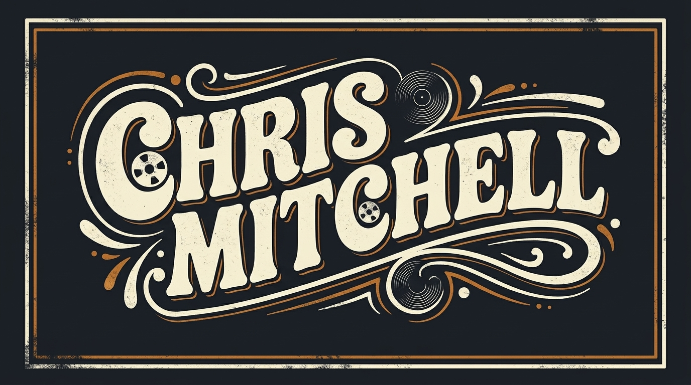

The Collection
Chris’s own band. Funky, theatrical, and loud, with a nonstop dance groove. Late-1990s Nashville party-scene favorites who opened for The Ohio Players, Parliament Funkadelic, and KC & The Sunshine Band.
Vocalist · Bandleader · Producer · Nashville

Making the world a better place one song at a time.
Chris Mitchell loves to sing and is almost always doing it. Spend a few minutes with him and you will be serenaded with verses, choruses, and instrumental breaks, real and imagined.
An Akron, Ohio native, he started on violin and in school singing in the early grades, wrote his first song in sixth grade, and went on to years of voice lessons, twelve bands, an orchestra, and two music schools before landing in Nashville.
In the late 1990s his band The Collection became a fixture of the city’s party scene, a spectacle of hot pants, feather boas, choir robes, and a nonstop funky groove. In 2005 he began “Chris Mitchell Presents,” a monthly event that helped launch several Nashville artists.
His album Sing (2010) came out on his own Nickelbug Records. Today he sings with The Collection and a lineup of Nashville tribute bands, produces and records at Nickelbug Music, and coaches vocalists.
Nickelbug Records · R&B, pop, and rock
The self-titled CD from Chris Mitchell & The Collection, produced by Chris Mitchell and Josh Harris. Listen.com called the group an eight-piece dance-pop act with confident R&B vocals.
Where to catch him on stage.
Chris’s own band. Funky, theatrical, and loud, with a nonstop dance groove. Late-1990s Nashville party-scene favorites who opened for The Ohio Players, Parliament Funkadelic, and KC & The Sunshine Band.
A tribute to the music of Journey.
Led Zeppelin, Nashville style.
Classic albums, played live.
Rock fans know the show: great records performed live, front to back.
Show dates will be posted here.
Nickelbug Music in Nashville is Chris’s recording studio and the home of Nickelbug Records. He produces, records, mixes, and masters, and has worked on projects including Wellsprings Ltd.’s Hell Of A Ride and live sessions recorded at Dee’s Country Cocktail Lounge. He also does live sound and coaches singers.
Merch is on its way. Check back soon.
Artists, makers, poets, and saints.

Laurie Webb's podcast about Nashville's rock scene of the 1980s and early 1990s, with news, live shows, and host picks.
An independent Nashville music company: music production, artist development, and sync licensing.

Americana and alt-country singer-songwriter. Her debut album, Victory, came out in 2013. Videos, music, and booking.

The official site for Laurie Webb of LollieVox, singer/songwriter known for her hits from FL Studio Demo Songs.

Custom electric guitars and basses, handmade in Tennessee by a luthier with over three decades of experience.

Music, photos, and merch from The Vegas Cocks.
For booking, vocals, studio time, and everything else, use the form.